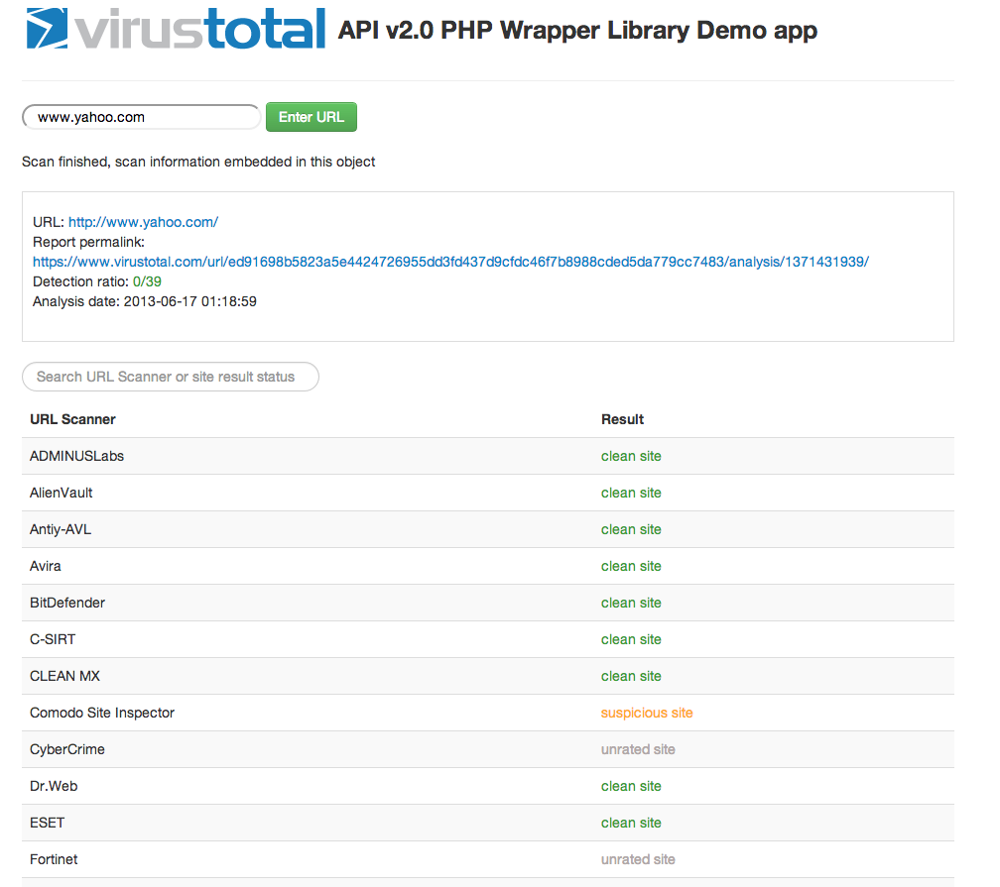

Virus Total Public API v2 PHP Wrapper Demo Application
Demo Application builds on top of the Virus Total Public API v2.0 PHP Wrapper library (https://github.com/jayzeng/virustotal_apiwrapper)
This application is used to illustrate how to use the wrapper library and I would suggest you NOT to use it on production without carefully reviewing the source code. The app is built on top of angularjs (angularjs.org).
Project skeleton was generated with:

You may install them via npm install
Run local server
grunt server
Trigger unit test
grunt test
Deploy to your server:
grunt build
This generates all source code to the dist folder.
List available grunt tasks:
grunt --help